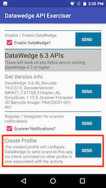

DataWedge API サンプル アプリでは、作成時の最新バージョンであるバージョン 6.8 までのすべての主要な DataWedge Intent API の機能を示します。このサンプル アプリケーションの利用は、DataWedge の基本的な理解を前提としています。DataWedge API の詳細とこのサンプル アプリの理解については、Zebra のエンジニアである Darryn Campbell の記事 「DataWedge API – 利点と使用方法」を参照してください。この DataWedge API サンプルは、この記事が元になっています。
注: このアプリケーションは、デモンストレーションのみを目的としています。このデモは、保証なしで現状のまま提供され、個々のニーズに合わせて変更できます。サンプル アプリ画面の外観は、サンプル アプリのバージョン、Android のバージョン、および画面サイズによって異なります。
このアプリケーションに関連付けられている DataWedge プロファイルをセットアップします。
[DataWedge 6.3 API] セクションの [プロファイルの作成] で、[送信] コマンドをタップします。
「DW API Exerciser Profile」という名前の新しいプロファイルが、以下の設定で DataWedge に作成されていることを確認します。
図 1: プロファイルの設定、画面 1
 図 2: プロファイルの設定、画面 2
図 2: プロファイルの設定、画面 2
サンプル アプリをインストールして起動します。API の機能は、DataWedge API バージョン別にカテゴリ化されています。すばやく準備して実行するには、[DataWedge 6.3 API] セクションの [プロファイルの作成] オプションで、[送信] をタップします。これにより、DataWedge に「DW API Exerciser Profile」が作成され、このアプリがそのプロファイルに関連付けられます。スキャンしたデータを DataWedge から受信するために、インテント ブロードキャストを登録します。
 図 3: プロファイルの作成
[送信] ボタンをタップして、任意のコマンドでアクションを実行します。コマンドを送信すると、送信されたコマンドのステータスを示すトースト メッセージが表示されます。バーコードをスキャンすると、データがスキャン ソースおよびデコーダの情報とともに上部に表示されます。